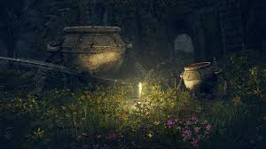
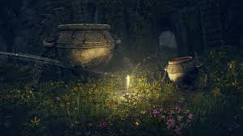

《艾尔登法环》BT磁力链接/网盘
《艾尔登法环》（日语：エルデンリング，英语：Elden Ring）
是一款由FromSoftware开发，万代南梦宫娱乐发行的魂系动作角色扮演游戏。本作是由游戏制作人宫崎英高与奇幻小说家乔治·R·R·马丁共同创作。
游戏于2022年2月25日发行，有PS4、PS5、Windows、Xbox One、Xbox Series X/S等版本，并计划于2025年发售Nintendo Switch 2版本。而D
LC《艾尔登法环 黄金树幽影》（Elden Ring Shadow of the Erdtree)则在2024 年 6 月 21 日正式推出，登上 PC、PS4、PS5、Xbox One、
Xbox Series X/S 等平台。本作拥有魂类游戏固有的高难度关卡、开放世界、无指引探索、多重结局、多种职业等游戏特点。截至2025年4月29日
，本作全球销量已突破3000万套[2]。
bt Download Link: https://www.123912.com/s/gqh9jv-bnKG3


 

游戏玩法 本作为第三人称的动作角色扮演游戏，玩法融合前作《黑暗之魂》系列、《血源诅咒》、《只狼》的某些特点。宫崎英高将《艾尔登法环》视为《魂系列》游戏的“进化”，和其他作品相比，本作体量更加庞大。不仅以开放世界呈现，更将带来骑马战斗、召唤灵等新游戏机制。 与其它开放世界游戏不同，《艾尔登法环》不会像其它游戏一样拥有住着许多非玩家角色的城镇。制作负责人北尾泰大表示：游戏世界将分成三种地图架构，分别为“开放式场景”、“中小型地下迷宫”以及大型迷宫关卡“传说遗迹”，并有昼夜及天气的环境变化。[3] 游戏与《黑暗之魂》系列一样能够自定义角色外貌，装备及能力值也可以自己决定。可以依照自己的喜好来打造角色，并根据自身习惯选择以剑、弓、沉重武器、魔法等各式武器或手段进行战斗。当玩家遇到强敌或头目出现的时候，可以召唤“骨灰”伙伴并肩作战。骨灰本身也可以进行强化，而且因为骨灰有许多种类，可以依照情境需求来选择召唤的骨灰。另外也加入如《只狼》一般的潜行要素，当角色蹲下或藏身于树丛中时，较不容易被敌人发现，因此可选择潜行接近敌人的背后并发动背刺处决，或绕到更安全的地方。[4] 游戏另一大特点为骑马，透过使用道具自由地召唤出“灵马”。灵马可进行二段跳跃，或运用气流在大幅高低差的地形之间移动。玩家可利用灵马在开放式场景探索，也可在马背上进行战斗，但在地下迷宫及在线多人联机游玩时则无法骑乘灵马。另外本作同《黑暗之魂》系列、《血源诅咒》提供多人联机的功能，可和其他玩家一起探索、共同对抗头目，也可入侵其他玩家的世界进行敌对战斗。也有异步在线元素，像是在地上留下消息，或是将玩家死亡状况具现化的“血迹”等。[4] 游戏情节 背景 《艾尔登法环》故事发生在名为“交界地”的地区。艾尔登法环破碎后，其碎片“大卢恩”散落各地。“永恒女王”玛莉卡失去踪迹，“黄金”葛德文在“黑刀之夜”成为最初的死者。玛莉卡的后代众半神们取得法环碎片，碎片带来的力量使他们陷入疯狂，引发“破碎战争”，此战没有王者崛起，却导致“无上意志”的抛弃。玩家作为褪色者[注 1]，目标是修复艾尔登法环，成为艾尔登之王。[注 2][5][6][7] 主线 游戏开始后，玩家在候王礼拜堂[注 3]醒来，发现死亡的指头女巫，游戏内官方建言“即使引导已经破碎，也请您当上艾尔登之王。”离开此处后，玩家将在“漂流墓地”开始正式的旅程。不久后玩家与梅琳娜会面，对方提出条件，要求玩家带其前往黄金树脚下的王城罗德尔，她则会交给玩家灵马托雷特及把卢恩转化为自身力量[注 4]的方法。 点亮足够的赐福点后，梅琳娜会将玩家带往“圆桌厅堂”。在这里百智爵士会告诉玩家，在击败第一个碎片君王，并取得其大卢恩后，玩家可以在圆桌厅堂见到无上意志的使者“双指”。玩家照做后可以与双指身边的解指老妪对话，得知至少需要两个大卢恩才能修补法环。取得第二个大卢恩后，解指老妪会告诉玩家王城的封印已经解开，可以进入了。 玩家进入王城罗德尔后梅琳娜会在赐福处感谢玩家达成约定，并与玩家告别。玩家击败王城最高处的“赐福王”蒙葛特后，被告知黄金树拒绝所有人，即便是守护黄金树的王也不例外。在赐福处与梅琳娜交谈，她再次提出约定，带她去巨人山顶取得火焰，烧掉黄金树的刺，而她会负责火种的事。 玩家到达火焰大锅后梅琳娜会在赐福处将自身作为火种，点燃黄金树，同时进入“逐渐崩毁的法姆‧ 亚兹拉”。解放“命定之死”后，黄金树彻底燃烧，王城也变成灰城。进入黄金树后前后击败王夫拉达冈和艾尔登之兽，便可以开始选择结局。 结局 根据玩家所选择方向的不同，总共有六种不同的时代作为结局[注 5]，直接修复法环的宿命之主，当上“艾尔登之王”[注 6]；或是成为魔女菈妮的暗夜之主，进入“星之时代”；亦或是成为烧毁一切的浑沌之主，化为“癫火之王”[注 7]。